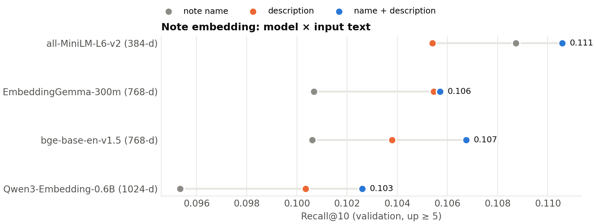
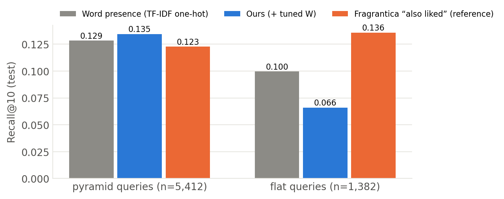

Two perfumes that list the same materials under different names should still look alike. Embed every note, compare perfumes layer by layer, and check the result against what people who smelled them voted.
The simplest way to recommend a perfume from its notes is word presence: treat each note name as a keyword and score two perfumes by how many they share (TF-IDF cosine over note names). It misses the relations a perfumer would see.
Problem 1
Same material, different name
bergamot, sicilian bergamot, calabrian bergamot and bergamot rind are four unrelated keywords. The data has dozens of such variants (oud, agarwood (oud), indian oud, …).
Problem 2
Related materials
tonka bean and coumarin, or iso e super and orbitone, smell alike but share no characters.
Problem 3
Similar spelling, different smell
orange (citrus) and orange blossom (white floral) should not be close just because they share a word.
This project turns each note into a vector with a sentence-embedding model, so similar-smelling notes end up close together even when their names differ. A perfume is represented layer by layer as a weighted average of its note vectors, and perfumes are compared layer against layer.
Pipeline. Notes are encoded once, averaged per layer with IDF weights, and every candidate is scored with a single matrix product.
Note encoding. Every distinct note is encoded once by all-MiniLM-L6-v2 from the text "<note>: <short smell description>".
Layer embedding. For each of Top / Middle / Base, an IDF-weighted average of the note vectors, so rare, distinctive notes count more than ubiquitous ones like musk.
Layer-wise similarity. A learned 3×3 matrix \(W\) weights the cosine similarity between every query layer and every candidate layer.
Flat perfumes. If either perfume lists its notes without a pyramid, the two are compared on their whole note sets, minus a tuned offset \(\delta\).
Search. The layer-wise score collapses into one dot product per candidate over a \(137{,}668 \times 1{,}152\) matrix.
1 · Note encoding
$$E_n = \mathrm{MiniLM}\big(\, n \,{:}\, \mathrm{desc}(n) \,\big) \in \mathbb{R}^{384}$$
Why a description? A note name is one to three words. With the name alone, every model tried knows that sicilian bergamot is a bergamot, but places iso e super next to eau de vie and hedione next to heliotrope, because those names look alike. A short smell description puts aroma chemicals and look-alike names in the right place (iso e super → orbitone, hedione → paradisone, jasmine).
Why MiniLM? It scored best of the four models compared (Tuning), and it is also the smallest (384-d).
2 · Layer embedding (IDF-weighted mean)
For perfume \(p\) and layer \(\ell \in \{\text{top}, \text{middle}, \text{base}\}\) with notes \(N_\ell(p)\):
\(N\) = 137,668 perfumes, \(\mathrm{df}(n)\) = number of perfumes that list note \(n\) in any layer (each perfume counts once, so a flat perfume copied into three layers does not count three times).
Why IDF?musk appears in a large share of all perfumes and says little about what makes a perfume distinctive. Two perfumes that share a rare note are more likely to smell alike than two that share musk. IDF ranges from 1.97 (musk) to 12.8 (notes used by a single perfume).
3 · Layer-wise similarity
A query \(q\) and a candidate \(d\) are compared layer against layer with a symmetric \(3 \times 3\) weight matrix \(W\) whose entries sum to 1:
Why layers? A note pyramid encodes time. The same notes in a different layer make a different perfume.
Why a matrix and not just the diagonal? Off-diagonal terms let a note that one perfume lists as a heart note match the same note listed as a base note in another, which is common because brands assign layers inconsistently. The tuned \(W\) turned out to be nearly diagonal, with Middle↔Middle weighted most.
4 · Flat perfumes
28% of perfumes list their notes without a pyramid. Copying those notes into all three layers does not work: a flat perfume's "top" holds every note while a pyramid's top holds only a few, so flat perfumes end up matching only each other. Whenever the query or the candidate is flat, the two whole note sets are compared instead:
$$\mathrm{score}(q, d) = \begin{cases} \sum_{i,j} W_{ij}\, \cos\big(\hat q_i, \hat d_j\big) & \text{both } q \text{ and } d \text{ have a pyramid} \\ \cos\big(\hat u_q, \hat u_d\big) - \delta & \text{otherwise} \end{cases}$$
\(\hat u\) is the normalized IDF-weighted mean over all of a perfume's notes, and \(\delta = 0.125\).
Why δ? A whole note set is a less noisy average than a single layer, so whole-set cosines run systematically higher than layer-wise scores. Without the offset, flat candidates crowd out pyramid candidates for every pyramid query (validation Recall@10 falls to 0.080). For a flat query every candidate uses the whole-set score, so δ does not change its ranking.
5 · Search as one matrix product
All candidate layers are precomputed and concatenated, \(D \in \mathbb{R}^{N \times 1152}\) (≈ 635 MB in float32). Because \(W\) only touches the query side, the score is a single dot product:
A batch of \(B\) queries is one \((B \times 1152)\cdot(1152 \times N)\) product followed by torch.topk; the query perfume itself is masked out. Whole-note-set vectors are a second matrix \(U \in \mathbb{R}^{N \times 384}\); both products are computed and combined with the flat mask.
Data
Notes in, human votes as ground truth.
Perfumes
Fragrantica Perfumes: Ratings, Notes, Votes & More (Kaggle, updated 2026-09-20, CC BY-NC-SA 4.0): 140,228 perfumes with notes, ratings and community votes. Each note has a 0–100 member-voted prominence; the model does not use these weights (see Tuning), only which notes a perfume lists.
Notes as listed on Fragrantica
Perfumes
Conversion
Full pyramid (Top / Middle / Base)
98,371
kept as is
Flat list only (no pyramid)
38,637 (27.6%)
same notes copied into all three layers; scored on the whole note set
Pyramid with an empty layer
660
empty layer gets the union of the other layers
No notes
2,560
dropped
Note names are lower-cased and stripped (2,592 → 2,589 distinct notes). Perfumes are identified by their Fragrantica id, since names are not unique.
Evaluation: "Smells like this" votes
Every Fragrantica perfume page has a "This perfume reminds me of" list, where members vote agree / disagree on whether two perfumes smell alike. These votes come from people who smelled the perfumes, while the model only sees note lists.
740,672 (query, target) pairs with vote counts.
A pair is a positive if agree > disagree and agree ≥ 5. Its gain is agree − disagree.
44,801 perfumes have at least one positive and are used as queries, split by query id into train 70% / validation 15% / test 15% (31,235 / 6,772 / 6,794). Every perfume stays in the searchable database whatever its split.
The page's algorithmic "You might also like" list is a reference point: Fragrantica's own recommender, which also uses brand and browsing behaviour.
Note descriptions
One short smell description per note, written by an LLM (Claude Opus 5.5). 212 notes (8.2%) whose smell could not be identified with confidence (brand fantasy notes such as powder from the moon, unclear trade names) are marked UNKNOWN and fall back to the bare note name.
Hyperparameter tuning
Tune on train, choose on validation, test once.
For each query the model returns its top-100 list (query excluded). The tuning objective is mean Recall@10 on the train split. It counts every voted match equally, while nDCG is dominated by a few very popular perfumes whose matches have thousands of votes.
Metric
Definition
Recall@K
positives in the top K / all positives of the query (K = 5, 10, 20)
nDCG@10
\(\sum_{\text{hits in top 10}} g / \log_2(\text{rank}+1)\) over the best achievable value, \(g = \text{agree} - \text{disagree}\)
MRR
\(1 / \text{rank of the first positive}\) (0 if none in the top 100)
Discrete choices were compared on validation with the other settings fixed. Differences of a few thousandths were checked with a paired bootstrap over queries (2,000 resamples).
Note embedding model and input text
Four models × three input texts: the note name, the LLM description, and "name: description".

The description helps every model. The smallest model, MiniLM, is best overall with name + description.
The larger models gain most from the description (Qwen3 +0.007).
Against MiniLM with names only, adding the description gives +0.004 nDCG@10 (significant) and +0.003 Recall@10 (not significant).
Models: all-MiniLM-L6-v2, google/embeddinggemma-300m (STS prompt), BAAI/bge-base-en-v1.5, Qwen/Qwen3-Embedding-0.6B (instruction "Given the name of a perfume note, represent how it smells").
Note weights: IDF vs. member votes
Tried \(w_n = \mathrm{IDF}(n)^{\gamma}\,\big(\alpha + (1-\alpha)\,v_n/100\big)\) with \(\alpha = 1\) for perfumes nobody voted on and \(\alpha_{\min}\) otherwise, over \(\alpha_{\min} \in \{0, .25, .5, .75, 1\}\) × \(\gamma \in \{0, .5, 1\}\).
Setting (each with its own tuned W)
Train R@10
Val R@10
Test R@10
Votes, no IDF (\(\alpha_{\min}\) = 0.5, \(\gamma\) = 0)
0.125
0.128
0.127
IDF only (\(\alpha_{\min}\) = 1, \(\gamma\) = 1)
0.121
0.119
0.125
Once each setting gets its own tuned \(W\), the gap on test is +0.0025 Recall@10 (95% CI −0.001 to +0.006, not significant). The final model uses IDF only. Prominence votes are human judgements about the specific perfume; using them would let people's perception into the model through the back door, for a gain that could not be shown to be real.
Layer weights W
Six free entries (symmetric), optimized as softplus-transformed parameters with Nelder-Mead (adaptive, 225 evaluations) on a fixed sample of 10,000 train queries.
Top
Middle
Base
Top
.308
.023
.009
Middle
.023
.404
.021
Base
.009
.021
.184
Nearly diagonal: layers are compared with the same layer, and the heart layer matters most. Tuning \(W\) adds +0.012 Recall@10 and +0.012 nDCG@10 on test, both significant.
Flat perfumes: δ
Grid-searched on train Recall@10 with the tuned \(W\) fixed:
Hybrid vs. whole note set for every pair is not a significant difference (Recall@10 −0.0005 [−0.004, +0.003]). The hybrid is kept because it uses the pyramid wherever one exists.
Re-tuning \(W\) under the hybrid rule changed nothing (+0.0001 Recall@10).
Final settings:all-MiniLM-L6-v2 on "name: description", IDF note weights, the tuned \(W\) above, whole-note-set comparison for flat perfumes with δ = 0.125.
Results
The embedding beats word presence on every metric.
Test split, 6,794 queries. Word presence is the same pipeline (IDF weights, layers, tuned \(W\), flat rule with its own δ = 0.2) with every note as a one-hot vector instead of an embedding. It isolates exactly what the embedding adds.
Method
R@5
R@10
R@20
nDCG@10
MRR
Random
0.000
0.000
0.000
0.000
0.000
Word presence (TF-IDF one-hot, same pipeline)
0.108
0.128
0.149
0.116
0.154
Previous version: note names, hand-set W
0.090
0.106
0.121
0.099
0.138
+ note descriptions
0.092
0.108
0.124
0.101
0.139
+ tuned W
0.103
0.121
0.140
0.113
0.152
Ours: + flat handling (final)
0.114
0.134
0.156
0.124
0.165
Fragrantica "also liked" (reference)
0.108
0.125
0.138
0.145
0.182
Previous version (v1) used the 2024 Fragrantica dataset (24,063 perfumes) with note names only, a hand-set \(W\), and self-retrieval Hit@1 as the metric. The rows above re-run its design on the new data.
Paired bootstrap (ours minus the other, 95% CI)
vs.
Recall@10
nDCG@10
Word presence
+0.006 [+0.002, +0.009]
+0.009 [+0.006, +0.012]
Before flat handling (+ tuned W)
+0.013 [+0.010, +0.016]
+0.011 [+0.009, +0.014]
Previous version's setup
+0.028 [+0.024, +0.032]
+0.025 [+0.022, +0.029]
Against word presence, the embedding finds more voted matches in the top 10 and ranks them higher; both differences are significant.
Against the previous version, the final model is +26% Recall@10 (0.106 → 0.134). Descriptions add +0.002, tuning W +0.012, flat handling +0.013.
Fragrantica's own list ranks best on nDCG/MRR, as expected: it uses browsing behaviour, brand and gender as well as notes. Its brand agreement in the top 10 is 16% versus 4% for ours. On Recall@10 and Recall@20 the note-only model is ahead (0.134 vs 0.125, 0.156 vs 0.138).
Flat vs. pyramid perfumes

Flat queries were the weak spot. Before flat handling the 1,382 flat queries reached Recall@10 0.066; whole-note-set comparison brings them to 0.121, on par with word presence (0.119). The 5,412 pyramid queries also improve slightly (0.135 → 0.137, word presence 0.130).
Examples
Matches only the embedding finds.
Voted matches on the test split that the final model ranks in its top 10 while word presence ranks them below 30. The notes the two perfumes do not share are mostly the same materials under different names.
Query → voted match (agree votes)
Ours
Word presence
Notes that differ only by name
Versus Pour Homme (In The Box) → Versace Pour Homme (209)
#10
>100
blue hyacinth/hyacinth, crystal amber/amber, may rose/rose de mai, sage/clary sage, sicilian lemon/lemon
Opium EDP 2009 → Opium EDT 2009 (147)
#5
>100
myrhh (typo in the data)/myrrh, vanille/vanilla, mandarin orange/tangerine
Counting every voted match in the test split, the two models disagree on a minority of hits, and the embedding finds more of the ones the other misses:
Voted matches in the top 10
Both
Ours only
Word presence only
Pyramid queries
1,466
302
221
Flat queries
253
67
50
A typical recommendation list
Top 5 for Creed Aventus (bergamot, black currant, apple, pineapple, patchouli, birch, musk, oakmoss, ambroxan, …):
#
Recommendation
1
Mazajyy @ Zodiac
2
Niche 01 Extreme @ Zodiac
3
Athens @ OPUX
4
Bergamot Patchouli @ Loris Parfum
5
Veritas @ Lidl
All five are Aventus-inspired dupes that copy its note list almost verbatim, which is the right answer from the notes' point of view. The perfumes members vote as smelling like Aventus are mostly other popular perfumes with different note lists, which a note-only model rarely retrieves.
Limitations
What a note list can't tell you.
Flat perfumes
28% have no layer information, so for them the model is a plain whole-note-set embedding, tied to layer-wise scores only through the single offset δ.
Notes are not the smell
Members vote after smelling; the model sees a note list brands write for marketing. Fragrantica's own recommender reaches only Recall@10 0.125, so absolute scores are low for any method.
The labels favour clones
Many voted matches are dupes or flankers that copy the original's note list. Exact name overlap already finds these, which limits how much better note understanding can show up. Popular perfumes weigh more in nDCG.
LLM-written descriptions
The 2,589 descriptions were generated, not written by experts, and have not all been checked by hand. 212 notes have no description.
Custom queries
Only notes that occur in the database can be used. Unknown notes are dropped.